Cruise Terminal Rotterdam
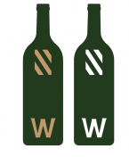
Charlois Wine
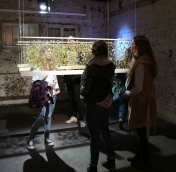
Expo n.a.t.u.r. Festival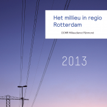
DCMR Milieudienst Rijnmond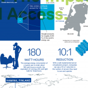
Search & Supply: The Impact of Uninterrupted Access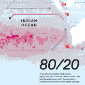
The Great Plastic Tide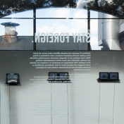
Stay Foreign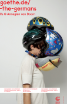
Goethe Institute – Meet the Germans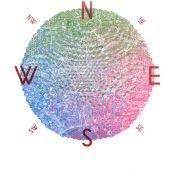
VB Traveling Map Peace & Quiet Dialog Station
Peace & Quiet Dialog Station
 Polyphasic Sleep Experiment
Polyphasic Sleep Experiment
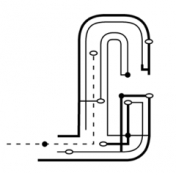
Cyclifier.org Die Zeit – Der alltägliche Tod
Die Zeit – Der alltägliche Tod

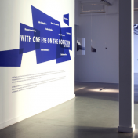
With one Eye on the Horizon
Liberty Control RAIR
 State of the Art
State of the Art
16th – 21rst Century
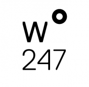
Weather 24/7 WYSIWYG
WYSIWYG
Queen Sirikit Textile Museum
Weather 24/7
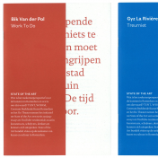
State of the Art
Young Architects Program MoMA PS1
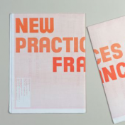
New Practices San Francisco
Museum of Chinese in America
Munkacsi’s Lost Archive
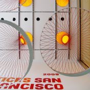
New Practices San Francisco
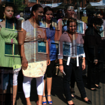
Kosmopolis
Time is Still

Dargerism
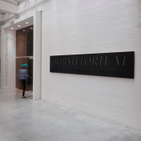
Dormatorium
Charles Rohlfs
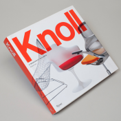
Knoll, a Modernist Universe
Stay Inside, Close Windows and Doors.
National Design Triennial
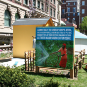
Design for the other 90%